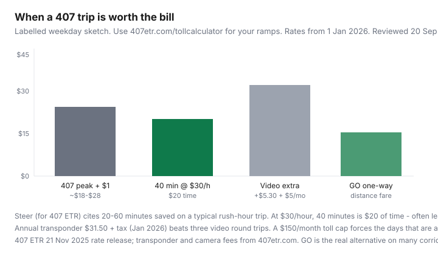

Transportation · Ontario
How to decide when Ontario Highway 407 tolls are worth it vs time and fuel
GTA drivers either never touch 407 out of folklore or treat it as a default commute and then open a $400 bill. Highway 407 ETR is all-electronic from Burlington to Pickering. Light-vehicle rates from 1 January 2026 vary by zone, direction, and entry time. A $1 trip charge applies either way. Video billing adds $5.30 a trip plus a $5 monthly account fee. This is a decision framework: time, fuel, a budget cap — and GO when the train is the actual product.
Ownership context: car TCO and gas without a hybrid. Corridor trips: Via vs driving. Fare math: GO PRESTO.
Key takeaways
- 2026 light-vehicle schedule (1 Jan 2026): per-km rates vary by 12 zones and peak hours; some central afternoon sections rose by up to 34¢/km. Most personal transponder customers were told to expect about $5/month more.
- Always $1 per trip. Annual transponder lease $31.50 + tax (extra transponders $12.60 + tax). No transponder: $5.30 camera per trip + $5/month account fee. Three round trips a year is the firm’s payback line.
- Steer (for 407 ETR) cites 20–60 minutes saved on a typical rush-hour trip. Price your own time. At $30/hour, 40 minutes is $20 — often less than a long peak bill.
- Set a monthly cap (example: $80 or $150). Use 407etr.com/tollcalculator before the on-ramp. Off-peak and short hops are a different product than 28 km at 5:15 p.m.
- GO, a shifted start time, or not owning the car at all can beat any toll strategy. Employer reimbursement may be taxable — ask payroll (high-level only).
How 407 billing works at a high level
Cameras and transponders bill the plate. You do not stop. Light vehicles (cars, SUVs, small pickups under 5,000 kg) do not legally require a transponder; heavy vehicles do. Your trip price is distance × the rate for your entry time and zone plus the $1 trip toll, plus video fees if you have no transponder. Unreadable plates can attract a much larger charge ($60 per trip on the published fee table). Use the official calculator — this page will not invent your ramps.
| Item | With transponder | Video / no transponder |
|---|---|---|
| Trip toll | $1 / trip | $1 / trip |
| Camera | — | $5.30 / trip |
| Account fee | — | $5 / month when billed |
| Lease | $5/month or $31.50/year + tax | — |
407 East (provincially owned, beyond the ETR) has its own rate card. Do not mix the two charts.
Time value vs toll for different trip lengths
Worked sketches (labelled). You must replace the toll with the calculator result for your entry and exit.
- 8 km hop, off-peak: small distance charge + $1. Time saved might be five minutes. Skip unless you are already late for a ferry or a pickup.
- 25–40 km peak commute: this is where bills live. If the calculator says $22 and you save 35 minutes, your implied time value is about $38/hour. If you would not pay yourself $38/hour to sit on the 401, do not pay 407 that either — unless missing daycare is the actual cost.
- Weekend through-trip: often cheaper rates; still add $1 and any video fees.
407 ETR’s 21 Nov 2025 release cited a Steer report of 20–60 minutes for a typical rush-hour trip and INRIX’s 61 hours of Toronto congestion in 2024. Those are marketing-adjacent facts. Your Tuesday is the experiment: run 401 once with a timestamp, 407 once, and compare bill to minutes.

Fuel and wear offsets on stop-and-go 401 alternatives
Idling and 20 km/h averages burn more litres than a steady 407 run. Use your trip computer, not a slogan. A 2 L extra on a $1.60/L day is $3.20 — real, and rarely the whole toll. Wear (brakes, clutch, time-on-engine) is the same story: a few dollars, not $25. If fuel is your argument, you probably wanted a different start time or GO, not a transponder.
Transponder vs video toll cost differences
Video is fine for a rare airport run. Two round trips a month at $5.30 extra is $21.20 in cameras plus the $5 account fee — already more than the $31.50 + tax annual lease. The operator’s “three round trips” payback is the right framing. Motorcycles and light vehicles can still use video; heavy vehicles cannot skip the transponder.
Employer reimbursement and taxable notes (high-level)
If work pays 407 for client travel, keep the invoice and the purpose. Commute reimbursement can be a taxable benefit — the same family of questions as workplace parking. Ask payroll. Do not build a side spreadsheet that “nets” a personal 407 habit against a T4 you never checked.
Monthly toll budget caps that force behaviour change
Pick a number ($80, $120, $200) and pre-pay it mentally like a pass. Use 407 on the days daycare closes at 5:00 and the 401 is a parking lot. Use the 401 or GO on the days you left at 6:40. Loyalty promotions and the 2026 points program (announced with the rate release) are coupons, not a reason to drive more. Route Relief exists for eligible low-income households — that is a program page, not this guide’s application form.
When transit or GO is the real alternative
If both ends have a GO station, the honest comparison is PRESTO (including the loyalty ladder on frequent trips) versus car + 407 + parking. A $22 toll plus downtown parking can lose to a train you can work on. If only one end has GO, a hybrid (drive to a lot, no 407) is the usual win. Car-lite households should price this inside city stacks, not as a standalone “I deserve the express.”
Calculator rule, 20 Sep 2026: no ramp pair, no opinion. 407etr.com/tollcalculator or the app, then decide. This page is not a bill estimate.
Sources & date stamps
- 407 ETR newsroom, 21 Nov 2025 — 2026 rate schedule effective 1 Jan 2026; up to 34¢/km afternoon increases in some central sections; ~$5 average monthly increase for personal transponder customers; annual transponder $31.50 + tax; extra transponder $12.60 + tax; calculator; Steer 20–60 minutes; Route Relief mention.
- 407etr.com rate / light-vehicle fee tables — $1 trip, $5.30 camera, $5 video account fee, $5 monthly lease option. Reviewed 20 Sep 2026.
- Companion GO PRESTO and car TCO guides. Provincial 407 East rates are a separate MTO chart.
Frequently asked questions
How much is 407 ETR per kilometre in 2026?
It depends on zone, direction, and entry time. There is no single ¢/km. Some central afternoon sections rose by up to 34¢/km. Use the official calculator for your ramps.
Is a transponder worth it?
If you make more than about three round trips a year, usually yes. The 2026 annual lease is $31.50 plus tax and it removes $5.30 camera charges and the $5 video account fee.
Does 407 save an hour?
407 ETR cites a Steer report of 20–60 minutes for a typical rush-hour trip. Time your own pair of trips. Daycare and a client meeting can be worth more than $30/hour.
Can I expense 407 for work?
Client travel with records is a different fact than commuting. Reimbursement can be taxable. Ask payroll. High-level only — not tax advice.
Is GO cheaper than 407?
Often, when both ends have a station and you were going to pay downtown parking anyway. Compare PRESTO plus last-mile to toll + fuel + parking, not to gas alone.